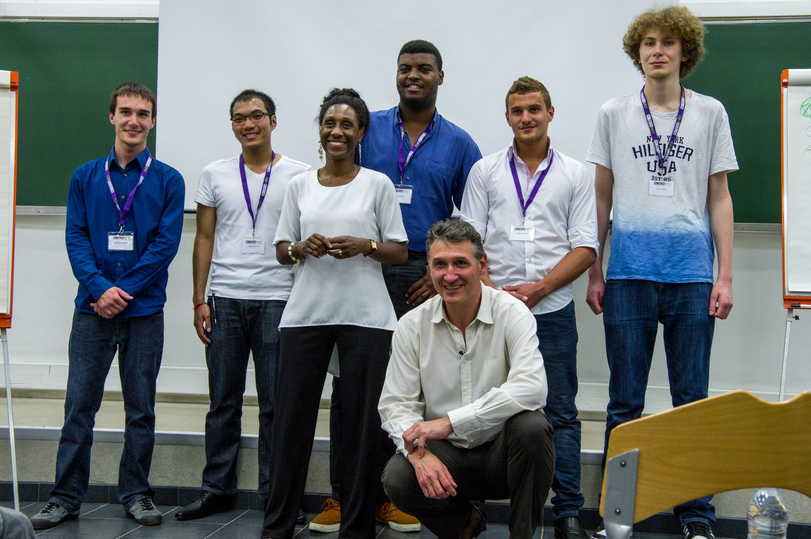
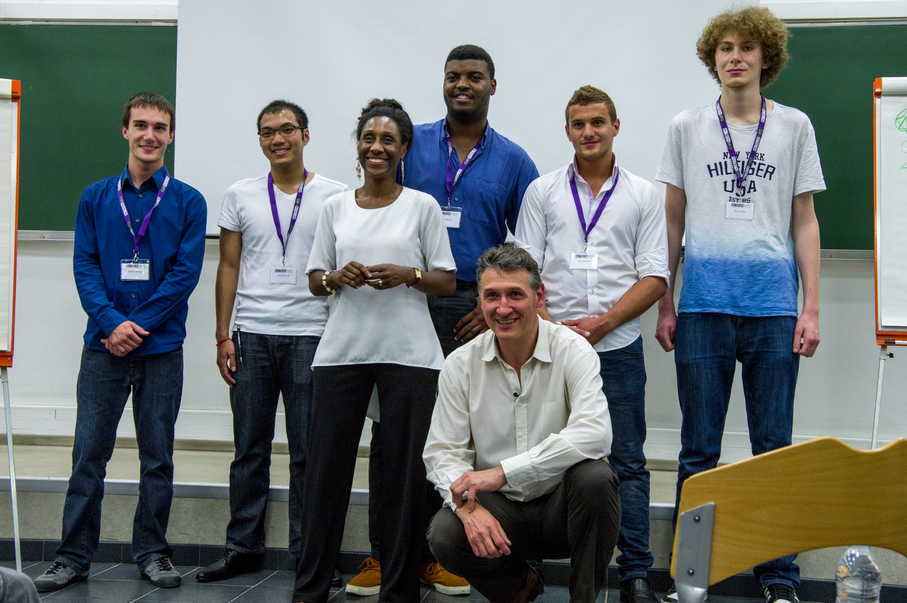

Dans le cadre du Projet de Formations Humaines, mon équipe et moi-même avons eu l'idée d'organiser une conférence de développement personnel sur le thème "Faites de vos différences une force". C'est de par cette idée qu'est né Improv'IT.
Cette conférence s'adressait à tout public et enseignait le pouvoir de transformer ses points faibles en nouveaux atouts que ce soit dans la vie personnelle ou professionnelle.
Nous avions comme objectif d'identifier et de trouver des conférenciers approuvés et de les convaincre de mener cette conférence. Après plusieurs rendez-vous et multiple négociation, nous avons enrôlé deux conférenciers en partenariat non lucratif.
Grâce au travail d'équipe, nous avons pu gérer la logistique, c'est-à-dire réserver le lieu de la conférence, embaucher un photographe, convenir de l'heure et de la date de la conférence etc...
Pour mettre en place tout cela, il fallait être organisé et flexible sur les demandes de nos parties prenantes. Par exemple, un de nos conférenciers demandait à ce qu'un paperboard soit disponible. Le deuxième voulait que la salle sois espacé et bien disposé pour qu'il puisse disposer ses exercices physiques.
Bien évidemment, une conférence sans spectateurs n'est pas une conférence car elle a avant-tout pour vocation d'enseigner et d'apprendre des connaissances aux personnes qui sont venues.
Nous avons donc du mener la campagne de communication d'Improv'IT. En passant par les réseaux sociaux, des affiches postées dans les locaux de l'école, du mailing ainsi que du street marketing; ces différents procédés de communication nous ont permit de rassembler plus de personnes qu'il n'était prévu.
Qui plus est, les bénéfices obtenus récoltés par Improv'IT ont été versés à une Objectif Aide : une association qui a pour but de sensibiliser le public à la solidarité et de soutenir l'action des associations à vocation humanitaire en organisant des évènements à caractère social, culturel ou humanitaire.
Enfin, je peux dire qu'organiser un projet de A à Z semble bien plus facile sur papier que dans la réalité. S'occuper de la logistique, communiquer constamment avec les parties prenantes, mener la campagne de communication, sont toutes autant des tâches qui ne peuvent être menés à bien sans un travail d'équipe soudé et une organisation harmonieuse. Mais cette expérience m'a surtout permis de m'initier au monde de la gestion de projet évènementiel et de devenir plus fexible et prévoyant face aux imprévues qui se confrontent à tout projet de cette envergure.